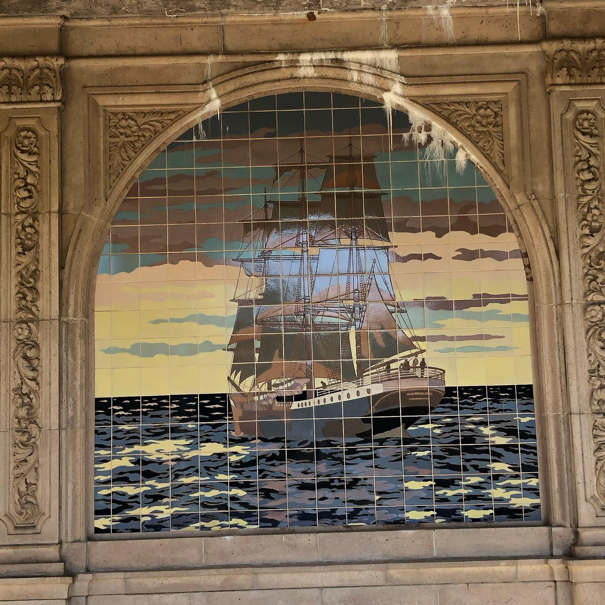

Day One
Jill's covid-25 results were good, as were the rest of her family's. They would remain in the hotel another four days as an added precaution before traveling to the island. The stay in the hotel was an opportunity for the students to get to know each other before their trek began.
Joining the Island Studio program had started with an application. Each had selected one of the following topics, which they shared with each other now over the big screen in their rooms.
Application
Since you've been nominated by our benefactors, everyone who applies is already accepted, so there is no reason to be stressed or concerned about qualifying. Just relax and your story will tell itself. Choose a topic that you'd like to share with the other student participants.
1. Some students have a background, identity, interest, or talent that is so meaningful they believe their application would be incomplete without it. If this sounds like you, then please share your story.
2. The lessons we take from obstacles we encounter can be fundamental to later success. Recount a time when you faced a challenge, setback, or failure. How did it affect you, and what did you learn from the experience?
3. Reflect on a time when you questioned or challenged a belief or idea. What prompted your thinking? What was the outcome?
4. Describe a problem you've solved or a problem you'd like to solve. It can be an intellectual challenge, a research query, an ethical dilemma - anything that is of personal importance, no matter the scale. Explain its significance to you and what steps you took or could be taken to identify a solution.
5. Discuss an accomplishment, event, or realization that sparked a period of personal growth and a new understanding of yourself or others.
6. Describe a topic, idea, or concept you find so engaging that it makes you lose all track of time. Why does it captivate you? What or who do you turn to when you want to learn more?
7. Share an essay on any topic of your choice. It can be one you've already written, one that responds to a different prompt, or one of your own design
Wilem talked about growing up in North Carolina near the coast, Audry related experiences from her life in the Middle East, Paul wrote about his dad Michael's calls from aborad, and Laura, the daughter of the travel program's founder, described her studies in astrophysics.

The Inner Inlet - by Wilem Wilkens